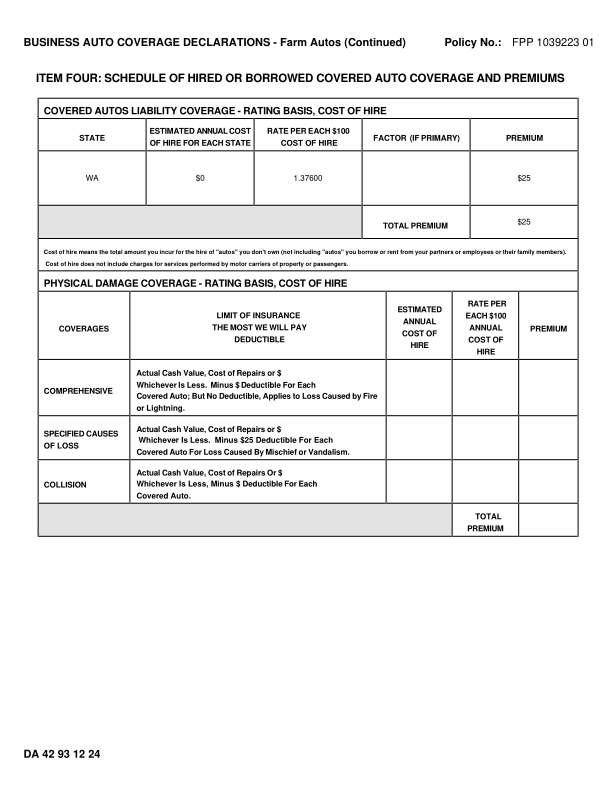
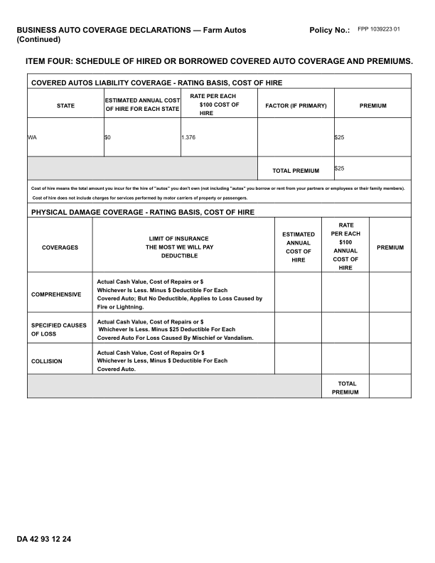
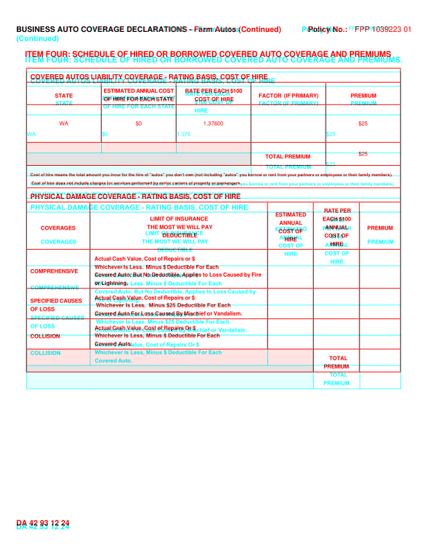
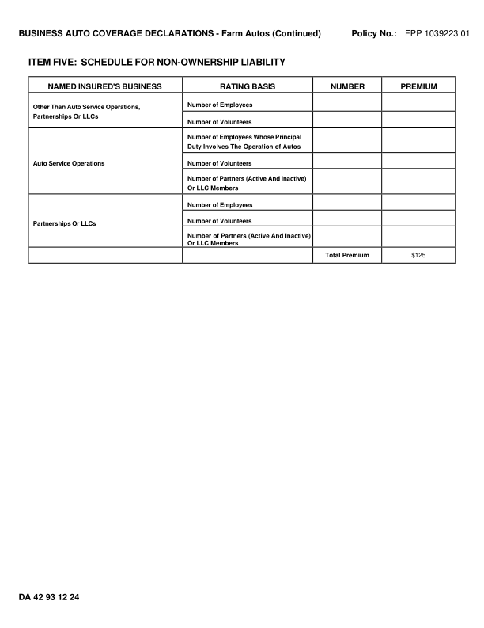
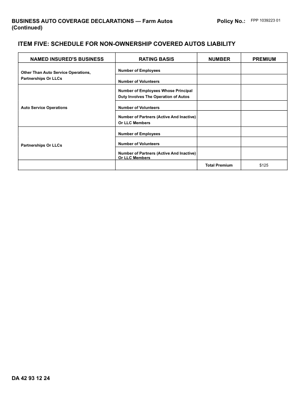
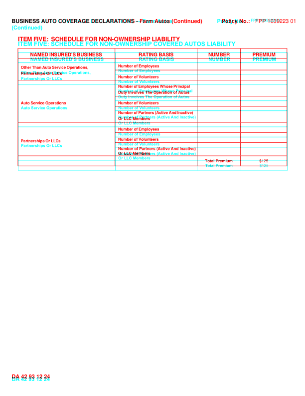

DA4293_1224: DIFFERENT score 99.2% pages golden 2 html 2 (pages with text) words golden 315 html 318 missing 1 extra 4 MISSING (in the GhostDraft golden, not in the HTML render) [37600] <= WA $0 1.37600 $25 EXTRA (in the HTML render, not in the GhostDraft golden) [376] <= WA $0 1.376 $25 [HIRE] <= HIRE [COVERED] <= ITEM FIVE: SCHEDULE FOR NON-OWNERSHIP COVERED AUTOS LIABILITY [AUTOS] <= Duty Involves The Operation of Autos golden C:\src\fact-docgen\src\Moe.Commercial.Documents.Generation.Integration.Tests\TestData\Snapshots\DA4293_1224\GoldenSnapshot.txt template C:\src\fact-poc\output\ghostdraft\batch\DA4293-1224.json serverxml C:\src\fact-poc\output\ghostdraft\serverxml\DA4293_1224\ServerXml.xml



moved Farm (+5.8, -0.2)pt moved Autos (+5.4, -0.2)pt moved Policy (-9.0, -0.2)pt moved No.: (-9.0, -0.2)pt moved ITEM (+0.0, +7.9)pt moved FOUR: (+0.8, +7.9)pt moved SCHEDULE (+2.0, +7.9)pt moved OF (+3.8, +7.9)pt moved HIRED (+4.4, +7.9)pt moved OR (+5.5, +7.9)pt moved BORROWED (+6.1, +7.9)pt moved COVERED (+7.9, +7.9)pt moved AUTO (+9.0, +7.9)pt moved COVERAGE (+9.9, +7.9)pt moved AND (+11.2, +7.9)pt moved COVERED (+0.2, +5.8)pt moved AUTOS (+1.5, +5.8)pt moved LIABILITY (+2.5, +5.8)pt moved COVERAGE (+4.4, +5.8)pt moved - (+6.3, +5.8)pt moved RATING (+6.7, +5.8)pt moved BASIS, (+7.3, +5.8)pt moved COST (+8.7, +5.8)pt moved OF (+9.7, +5.8)pt moved HIRE (+10.4, +5.8)pt moved ESTIMATED (-1.7, +10.1)pt moved ANNUAL (-1.3, +10.1)pt moved COST (+2.1, +10.1)pt moved $100 (-51.2, +16.1)pt moved FACTOR (+0.2, +10.6)pt moved (IF (-1.2, +10.6)pt moved PRIMARY) (-0.6, +10.6)pt moved PREMIUM (+0.2, +10.6)pt moved OF (-1.0, +10.1)pt moved HIRE (-0.7, +10.1)pt moved FOR (+0.2, +10.1)pt moved EACH (+1.0, +10.1)pt moved STATE (+2.0, +10.1)pt moved HIRE (-37.5, +16.1)pt moved WA (-46.8, +15.0)pt moved $0 (-48.8, +15.0)pt moved $25 (-46.5, +15.0)pt moved $25 (-46.5, +14.7)pt moved TOTAL (+0.3, +14.4)pt moved PREMIUM (+0.7, +14.4)pt moved Cost (+0.2, +13.0)pt moved of (+0.3, +13.0)pt moved hire (+0.3, +13.0)pt moved means (+0.3, +13.0)pt moved the (+0.4, +13.0)pt moved total (+0.4, +13.0)pt moved amount (+0.4, +13.0)pt moved you (+0.6, +13.0)pt moved incur (+0.8, +13.0)pt moved for (+0.9, +13.0)pt moved the (+1.1, +13.0)pt moved hire (+1.1, +13.0)pt moved of (+1.1, +13.0)pt moved "autos" (+1.1, +13.0)pt moved you (+1.1, +13.0)pt moved don't (+1.3, +13.0)pt moved own (+1.4, +13.0)pt moved (not (+1.4, +13.0)pt moved including (+1.5, +13.0)pt moved "autos" (+1.7, +13.0)pt moved you (+1.7, +13.0)pt moved borrow (+1.7, +13.0)pt moved or (+1.9, +13.0)pt moved rent (+2.0, +13.0)pt moved from (+2.0, +13.0)pt moved your (+2.2, +13.0)pt moved partners (+2.4, +13.0)pt moved or (+2.5, +13.0)pt moved employees (+2.6, +13.0)pt moved or (+2.6, +13.0)pt moved their (+2.8, +13.0)pt moved family (+3.0, +13.0)pt moved members). (+3.1, +13.0)pt moved Cost (+0.2, +14.5)pt moved of (+0.2, +14.5)pt moved hire (+0.2, +14.5)pt moved does (+0.2, +14.5)pt moved not (+0.2, +14.5)pt moved include (+0.2, +14.5)pt moved charges (+0.2, +14.5)pt moved for (+0.2, +14.5)pt moved services (+0.2, +14.5)pt moved performed (+0.2, +14.5)pt moved by (+0.2, +14.5)pt moved motor (+0.2, +14.5)pt moved carriers (+0.2, +14.5)pt moved of (+0.2, +14.5)pt moved property (+0.2, +14.5)pt moved or (+0.2, +14.5)pt moved passengers. (+0.2, +14.5)pt moved PHYSICAL (+0.2, +14.6)pt moved DAMAGE (+2.1, +14.6)pt moved COVERAGE (+3.6, +14.6)pt moved - (+5.6, +14.6)pt moved RATING (+6.1, +14.6)pt moved BASIS, (+6.9, +14.6)pt moved COST (+8.4, +14.6)pt moved OF (+9.4, +14.6)pt moved HIRE (+10.0, +14.6)pt moved RATE (+9.1, +13.0)pt moved PER (-24.9, +25.0)pt moved ESTIMATED (-0.0, +20.0)pt moved LIMIT (-6.8, +20.1)pt moved OF (-6.8, +20.1)pt moved INSURANCE (-6.8, +20.1)pt moved $100 (-11.8, +25.0)pt moved ANNUAL (+0.1, +20.1)pt moved THE (-7.3, +20.1)pt moved MOST (-6.7, +20.1)pt moved WE (-6.2, +20.1)pt moved WILL (-5.6, +20.1)pt moved PAY (-5.2, +20.1)pt moved ANNUAL (+0.1, +25.0)pt moved COST (+0.3, +20.1)pt moved OF (+0.6, +20.1)pt moved DEDUCTIBLE (-7.4, +20.1)pt moved COST (+0.2, +25.0)pt moved OF (+0.6, +25.0)pt moved HIRE (-0.0, +20.2)pt moved HIRE (+0.0, +25.0)pt moved Actual (+0.3, +23.2)pt moved Cash (+1.1, +23.2)pt moved Value, (+1.8, +23.2)pt moved Cost (+2.2, +23.2)pt moved of (+2.9, +23.2)pt moved Repairs (+3.5, +23.2)pt moved or (+4.4, +23.2)pt moved $ (+5.0, +23.2)pt moved Whichever (+0.2, +23.2)pt moved Is (+1.0, +23.2)pt moved Less. (+1.5, +23.2)pt moved Minus (+0.4, +23.2)pt moved $ (+1.0, +23.2)pt moved Deductible (+1.9, +23.2)pt moved For (+3.2, +23.2)pt moved Each (+3.8, +23.2)pt moved COMPREHENSIVE (+0.2, +23.2)pt moved Covered (+0.2, +23.5)pt moved Auto; (+1.1, +23.5)pt moved But (+1.9, +23.5)pt moved No (+2.7, +23.5)pt moved Deductible, (+3.2, +23.5)pt moved Applies (+4.3, +23.5)pt moved to (+5.4, +23.5)pt moved Loss (+5.9, +23.5)pt moved Caused (+6.8, +23.5)pt moved by (+7.7, +23.5)pt moved Fire (-226.4, +35.5)pt moved or (+17.1, +23.5)pt moved Lightning. (+17.4, +23.5)pt moved Actual (+0.2, +23.3)pt moved Cash (+1.3, +23.3)pt moved Value, (+1.9, +23.3)pt moved Cost (+2.4, +23.3)pt moved of (+3.1, +23.3)pt moved Repairs (+3.6, +23.3)pt moved or (+4.7, +23.3)pt moved $ (+5.1, +23.3)pt moved SPECIFIED (+0.2, +23.9)pt moved CAUSES (+2.4, +23.9)pt moved Whichever (+0.3, +22.9)pt moved Is (+0.2, +22.9)pt moved Less. (+0.2, +22.9)pt moved Minus (-1.8, +22.9)pt moved $25 (-1.8, +22.9)pt moved Deductible (-1.8, +22.9)pt moved For (-1.9, +22.9)pt moved Each (-1.9, +22.9)pt moved OF (+0.2, +23.9)pt moved LOSS (+0.3, +23.9)pt moved Covered (+0.2, +22.9)pt moved Auto (+1.1, +22.9)pt moved For (+1.9, +22.9)pt moved Loss (+2.6, +22.9)pt moved Caused (+3.3, +22.9)pt moved By (+4.2, +22.9)pt moved Mischief (+5.0, +22.9)pt moved or (+6.1, +22.9)pt moved Vandalism. (+6.6, +22.9)pt moved Actual (+0.2, +23.2)pt moved Cash (+1.3, +23.2)pt moved Value, (+2.0, +23.2)pt moved Cost (+2.4, +23.2)pt moved of (+3.1, +23.2)pt moved Repairs (+3.5, +23.2)pt moved Or (+4.7, +23.2)pt moved $ (+5.2, +23.2)pt moved Whichever (+0.2, +23.4)pt moved Is (+0.2, +23.4)pt moved Less, (+0.2, +23.4)pt moved Minus (+0.2, +23.4)pt moved $ (+0.2, +23.4)pt moved Deductible (+0.2, +23.4)pt moved For (+1.7, +23.4)pt moved Each (+2.4, +23.4)pt moved Covered (+0.2, +23.4)pt moved Auto. (+0.0, +23.4)pt moved TOTAL (+0.5, +22.9)pt moved PREMIUM (-0.3, +22.9)pt moved DA (-0.0, +4.1)pt moved 42 (-0.4, +4.1)pt moved 93 (-0.4, +4.1)pt moved 12 (-0.4, +4.1)pt moved 24 (-0.4, +4.1)pt missing h rule at 98.3 (38.7-577.6) missing h rule at 118.6 (38.7-577.6) missing h rule at 150.9 (38.7-577.6) missing h rule at 204.9 (38.2-577.6) missing h rule at 238.1 (38.2-577.6) missing h rule at 270.9 (38.7-577.6) missing h rule at 291.3 (38.7-577.6) missing h rule at 359.5 (38.7-577.6) missing h rule at 415.8 (38.7-577.6) missing h rule at 459.8 (38.7-577.6) missing h rule at 502.8 (38.2-577.6) missing h rule at 535.9 (38.2-577.6) missing v rule at 129.9 (291.8-502.8) missing v rule at 386.2 (291.8-502.8) missing v rule at 452.2 (291.8-535.9) missing v rule at 518.7 (291.8-535.9) extra h rule at 103.9 (38.2-579.0) extra h rule at 124.1 (38.2-579.0) extra h rule at 165.4 (38.2-579.0) extra h rule at 220.1 (38.2-579.0) extra h rule at 253.1 (38.2-579.0) extra h rule at 285.4 (38.2-579.0) extra h rule at 305.6 (38.2-579.0) extra h rule at 382.9 (38.2-579.0) extra h rule at 439.1 (38.2-579.0) extra h rule at 482.6 (38.2-579.0) extra h rule at 526.1 (38.2-579.0) extra h rule at 559.9 (38.2-579.0) extra v rule at 38.6 (103.5-560.2) extra v rule at 130.1 (306.0-526.5) extra v rule at 146.6 (124.5-220.5) extra v rule at 254.6 (124.5-220.5) extra v rule at 362.6 (124.5-253.5) extra v rule at 386.6 (306.0-526.5) extra v rule at 452.6 (306.0-560.2) extra v rule at 470.6 (124.5-253.5) extra v rule at 519.4 (306.0-560.2) extra v rule at 578.6 (103.5-560.2)



moved Farm (+5.8, -0.2)pt moved Autos (+5.4, -0.2)pt moved Policy (-9.0, -0.2)pt moved No.: (-9.0, -0.2)pt moved ITEM (+0.0, +9.8)pt moved FIVE: (+1.1, +9.8)pt moved SCHEDULE (-0.6, +9.8)pt moved FOR (+0.8, +9.8)pt moved NON-OWNERSHIP (+1.7, +9.8)pt moved LIABILITY (+110.7, +9.8)pt moved NAMED (+0.3, +8.8)pt moved INSURED'S (+1.2, +8.8)pt moved BUSINESS (+2.7, +8.8)pt moved RATING (+0.3, +8.8)pt moved BASIS (+0.5, +8.8)pt moved NUMBER (+0.3, +8.8)pt moved PREMIUM (+0.2, +8.8)pt moved Number (+0.3, +9.0)pt moved of (+1.2, +9.0)pt moved Employees (+1.5, +9.0)pt moved Other (+0.2, +10.1)pt moved Than (+1.2, +10.1)pt moved Auto (+1.8, +10.1)pt moved Service (+2.6, +10.1)pt moved Operations, (+3.8, +10.1)pt moved Partnerships (+0.2, +10.1)pt moved Or (+0.2, +10.1)pt moved LLCs (+0.2, +10.1)pt moved Number (+0.3, +9.0)pt moved of (+1.0, +9.0)pt moved Volunteers (+1.4, +9.0)pt moved Number (+0.3, +8.6)pt moved of (+1.4, +8.6)pt moved Employees (+2.0, +8.6)pt moved Whose (+3.4, +8.6)pt moved Principal (+4.3, +8.6)pt moved Duty (+0.3, +8.6)pt moved Involves (+0.3, +8.6)pt moved The (+0.3, +8.6)pt moved Operation (+0.3, +8.6)pt moved of (+0.3, +8.6)pt moved Autos (-0.1, +8.6)pt moved Auto (+0.2, +9.2)pt moved Service (+0.9, +9.2)pt moved Operations (+1.9, +9.2)pt moved Number (+0.3, +9.2)pt moved of (+1.2, +9.2)pt moved Volunteers (+1.5, +9.2)pt moved Number (+0.3, +8.8)pt moved of (+1.4, +8.8)pt moved Partners (+2.0, +8.8)pt moved (Active (+3.2, +8.8)pt moved And (+4.1, +8.8)pt moved Inactive) (+4.8, +8.8)pt moved Or (+0.3, +8.8)pt moved LLC (+0.3, +8.8)pt moved Members (+0.3, +8.8)pt moved Number (+0.3, +9.3)pt moved of (+1.0, +9.3)pt moved Employees (+1.4, +9.3)pt moved Number (+0.3, +9.3)pt moved of (+1.2, +9.3)pt moved Volunteers (+1.5, +9.3)pt moved Partnerships (+0.2, +9.0)pt moved Or (+1.8, +9.0)pt moved LLCs (+2.4, +9.0)pt moved Number (+0.3, +9.3)pt moved of (+0.3, +9.3)pt moved Partners (+0.3, +9.3)pt moved (Active (+0.3, +9.3)pt moved And (-0.0, +9.3)pt moved Inactive) (-0.0, +9.3)pt moved Or (+0.3, +9.1)pt moved LLC (+0.3, +9.1)pt moved Members (+0.3, +9.1)pt moved Total (+0.7, +8.8)pt moved Premium (+0.1, +8.8)pt moved $125 (+0.4, +8.8)pt moved DA (-0.0, +4.1)pt moved 42 (-0.4, +4.1)pt moved 93 (-0.4, +4.1)pt moved 12 (-0.4, +4.1)pt moved 24 (-0.4, +4.1)pt missing h rule at 96.8 (36.5-575.3) missing h rule at 116.9 (36.5-575.3) missing h rule at 140.3 (231.2-575.3) missing h rule at 160.6 (36.5-575.3) missing h rule at 192.7 (231.2-575.3) missing h rule at 212.9 (231.2-575.3) missing h rule at 245.0 (36.5-575.3) missing h rule at 265.3 (231.2-575.3) missing h rule at 285.4 (231.2-575.3) missing h rule at 312.2 (36.5-575.3) missing h rule at 332.4 (36.5-575.3) missing v rule at 36.0 (97.3-331.9) missing v rule at 230.7 (97.3-331.9) missing v rule at 395.6 (97.3-331.9) missing v rule at 482.7 (97.3-331.9) missing v rule at 575.8 (97.3-331.9) extra h rule at 105.4 (36.0-576.8) extra h rule at 125.6 (36.0-576.8) extra h rule at 148.9 (231.8-576.8) extra h rule at 169.1 (36.0-576.8) extra h rule at 201.4 (231.8-576.8) extra h rule at 221.6 (231.8-576.8) extra h rule at 253.9 (36.0-576.8) extra h rule at 274.1 (231.8-576.8) extra h rule at 294.4 (231.8-576.8) extra h rule at 320.6 (36.0-576.8) extra h rule at 340.9 (36.0-576.8) extra v rule at 36.4 (105.0-341.2) extra v rule at 231.4 (105.0-341.2) extra v rule at 395.6 (105.0-341.2) extra v rule at 483.4 (105.0-341.2) extra v rule at 576.4 (105.0-341.2)